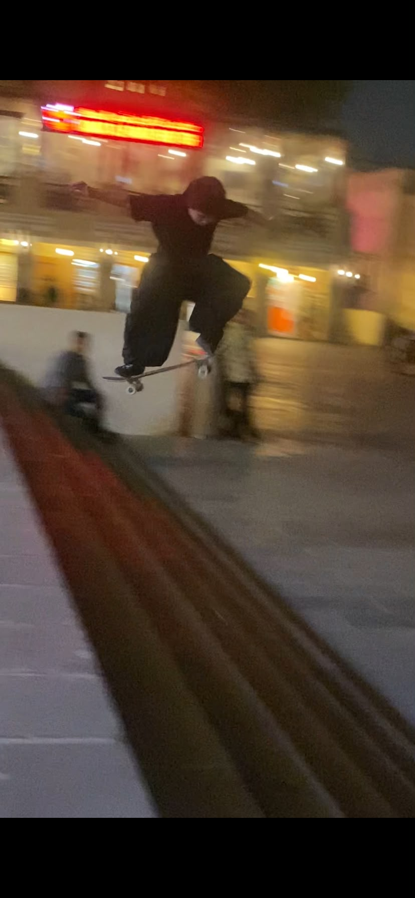
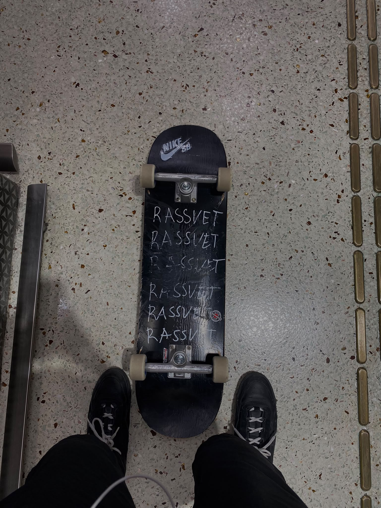

About Me
Hey! My name is Jacob, and I'm
an Information Technology student
who has a huge passion for
skateboarding.
For me, skateboarding is more than
just riding a board. It's about
freedom, creativity, and enjoying
every moment on four wheels.
Whether I'm practicing tricks,
cruising around, or simply
spending time on my skateboard,
skating always brings me happiness.
Through this blog, I want to share
my experiences, my skateboard setup,
and the reasons why I love skating.
My Skateboarding Journal
1. Why I Love Skateboarding

Date:
October 16, 2026
Skateboarding has always been
something that makes me feel
free and happy.
There's something special
about stepping on a skateboard,
feeling the wheels roll,
and forgetting about everything
else for a while.
What I love most about skating
is that there's always something
new to learn. Every trick takes
patience, practice, and
determination.
Even when I fall or fail a trick,
I always find a reason to get
back up and try again.
2. My Skateboard Setup

Date:
October 12, 2026
One of the most exciting parts
of skateboarding is building
a skateboard that matches
your personal preferences.
My current skateboard setup
consists of a Amoire Libre
8.5-inch deck, Lurpiv Solids
trucks, Spitfire Formula Four
wheels, and Bronson bearings.
I chose these components because
I wanted a skateboard that
feels comfortable and enjoyable
to ride.
Having my own skateboard setup
makes every skating session
even more special.
3. Lessons I've Learned From Skating

Date:
October 8, 2026
Skateboarding has taught me
many valuable lessons that
I can apply to my everyday life.
One of the biggest lessons
I've learned is that progress
takes time.
You can't expect to land
every trick on your first try.
Sometimes it takes dozens
or even hundreds of attempts.
Skating has also taught me
to be patient, stay determined,
and never give up easily.
Every small improvement
reminds me that hard work
and consistency can lead
to something rewarding.